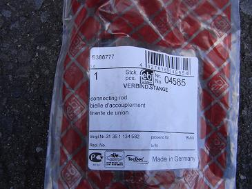
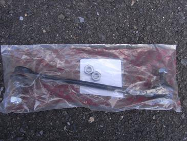
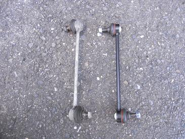
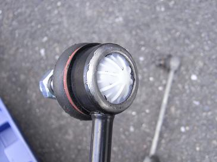
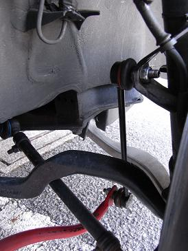

 今まで、サードパティ品であるKARLYN製やHAMBURG-TECHNIC製を使用して失敗しているので。。 今回は、BMW純正品で見積もりを取ったところ、約13000円であった。 そこで、純正OEMであるLEMFORDER製（純正もLEMFORDER製）で見積もりを取ったところ約5500円だった。 しかし、目の肥えた皆様には「OEM品に交換してバッチリだぜ！」といった甘ったるいレポートでは許されないことは分かっている。 そこで、LEMFORDER製と約800円差があったfebi製をチョイスすることにした。 また安物買いの銭失いになるのかなぁ・・・？！
|
 なぜかナットが２つ余分についている。 何に使うのだろうか。予備？
|
 取り外したリンクとの比較。 ブーツは破れていないが、たまに音がするのだ。
|
 febi製リンクの裏側。 コストダウンの為か、プラスチック製になっている。 どれぐらい持つのか楽しみだ。
|
 慣れれば片方数分で交換できる。ジャッキアップのほうが時間がかかるぐらいだ。 2012/8月 追記 febiは品質にバラつきがあって、当りハズレが激しいイメージがある。 リアアッパーマウントは10000km持たずズタズタに裂けたり、クラッチマスターは新品から押さえのＣリングが無かったりしたことがあったからだ。 交換して40000kmほど走ったが、ブーツの切れやボールジョイントのガタも無い。 今回は当りだったようだ＾＾
|